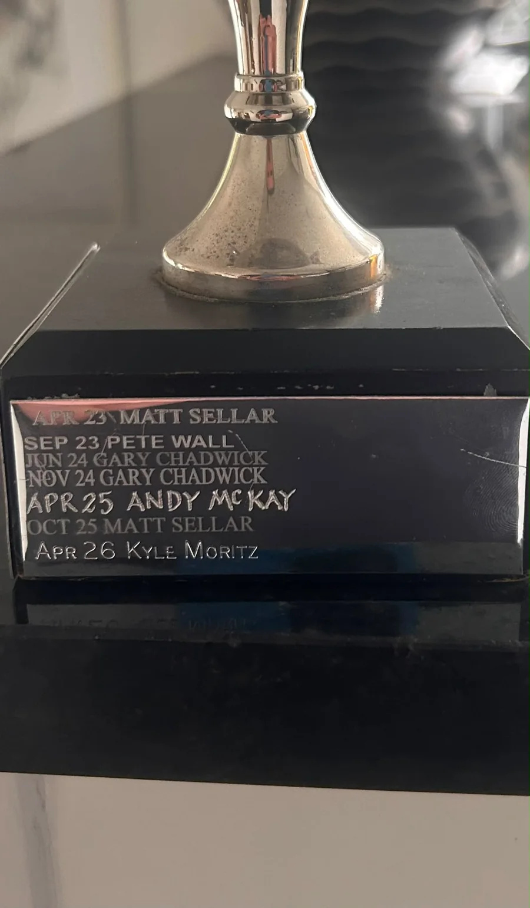
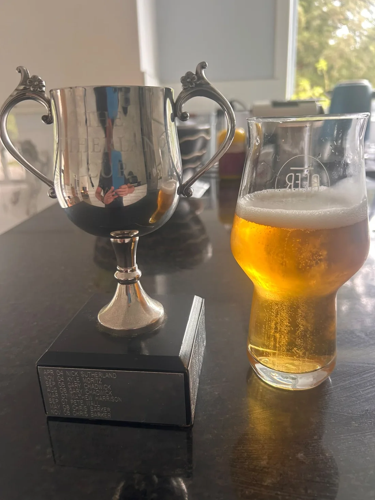

LEGACY. RIVALRY. EIGHT BALL.
A tradition on the table
SUTHER'SCUP.
Thirty-three chapters in the record books. One trophy everyone wants. A new name waiting to be etched.
FRIDAY 30 OCTOBER 2026• EDITION 34

34THE NEXT
CHAPTER
CHAPTER
THE CUP IS EARNED
More than a game.
Legends of the felt.
Explore every champion and runner-up from the first recorded edition to the latest contest.
Who's taking the cup home?
Create a balanced draw, tap match winners, and watch the knockout bracket take shape automatically.
ESTABLISHED IN THE RECORDS
HALL OF FAME.
The roll of honour. Every recorded winner and runner-up, April 2004 to the present.
33EDITIONS RECORDED
The record book
| EDITION | DATE | WINNER | RUNNER-UP |
|---|
OFFICIAL ARCHIVE · MARCH 2011
THE CUP RULES.
The original Suther's Cup rules, Version 2 (March 2011), reorganised for quick reference during a match.
8BALL · HOUSE RULES
01The break
- Determine the breaker by coin toss or by rolling the white ball closest to the end.
- If more than one ball is potted on the break, the breaker nominates a colour and continues.
- If a ball is potted on the break but there is a foul, the table is open for the non-breaker.
- If the black is potted on the break, re-break.
02Fouls and the two-shot rule
These are a variation of UK rules. A foul generally gives the opponent two shots; the second shot is lost if the player pots a ball on the first.
Two shots do not apply while playing the black. The original rules also state that a player loses any remaining two shots if they foul, and the opponent receives two shots.
A foul includes:
- Missing your ball or contacting an opponent's ball or the black before your own ball.
- Any ball leaving the table.
- Potting the white ball.
- Potting an opponent's ball.
Potting the black before it is your last ball loses the match. Other fouls on the black do not automatically lose the game.
03Black ball and nominated pocket
- You must nominate a pocket for the black.
- If the black goes into a different pocket, it is a foul and the black returns to the spot.
- There is only one shot on the black.
- The black must be potted by itself to win; otherwise it is a foul and is spotted again.
04Snookers after a foul
- If the opponent fouls and leaves you snookered, you may nominate an opponent's ball to contact as a legal shot.
- You still foul if you pot the opponent's ball. If nothing is potted, you retain the second shot.
- When snookered on the black by an opponent, you may nominate one of the opponent's balls to hit, but still have only one shot on the black.
- This concession does not apply if you snooker yourself.
05Balls leaving the table
- If the white is potted or leaves the table, it may be played from anywhere in the D.
- If a coloured ball leaves the table, place it on the spot (or as near as possible).
- Accidental contact that moves balls on the table is not a foul; replace the balls as close to their original positions as possible.
- If another player catches a ball hit off the table before it touches the ground, the player responsible owes the catcher a drink.
06Playing conditions
- Mechanical bridge/rest sticks are not permitted. Play behind your back or use your other hand if required.
- At least one foot must touch the floor when playing a shot.
- No “spading” during a game of pool. The original rules do not further define this term.
07Downtrou
Triggered by either:
- Losing a game without potting any of your balls; or
- Losing all your round-robin games.
Penalty: trousers down and round the table or a round of shots for the other players.
08Final decisions
The March 2011 document states that any disputed matter not covered by the written rules is referred to the original rule-maker, whose decision is final.
FRIDAY 30 OCTOBER 2026
EDITION #34.
One draw. One live scoreboard. One new entry on the trophy.
READY TO SET UP
Saved locally on this deviceChanges persist on refresh in this browser. Back up regularly.
Build the draw
Enter the competitors and the match budget. The system allocates unique round-robin matches as evenly as possible, reserves the knockout games, and checks the minimum before creating the draw.
2–24 players
One name per entry
Includes round robin and every knockout match.
Guaranteed before knockouts. The number of total games cannot be guaranteed equally because eliminated players stop playing.
Automatic uses top 2 if top 4 cannot fit the match cap. Both 9-game options require at least 8 entrants. McIntyre is the original system; NRL-style gives the top four a double chance.
Generating a replacement draw later will erase entered match results. Your current draft settings save automatically.
How do I make sure the results aren't lost?
During the evening: use one nominated scoring device. Changes automatically save in that browser on that device; refreshing the page normally retains the draw and results. After a few matches, click Backup JSON and keep the file somewhere accessible (e.g. iCloud Drive, OneDrive, or email). If needed, use Restore to recover it.
To share an updated site: the GitHub Pages website itself is read-only. Download the JSON backup, name it edition34.json, and replace data/edition34.json in your GitHub repository, then commit the change. Visitors will see that published snapshot, but changes they make still only save in their own browser until you publish another snapshot. If a visitor has older local results, they can use Load published results below.
At the finish: select PDF / Print and choose “Save as PDF” to create a readable archive. PDF is not a restore file; keep the JSON backup as well. CSV is useful for Excel but does not preserve the full working state.
No separate published snapshot loaded.
GitHub Pages does not provide live multi-device score synchronisation. For simultaneous scoring on several phones, a database and authentication (e.g. Firebase/Supabase) would be required. Do not put GitHub tokens or database administrator keys into public site code.